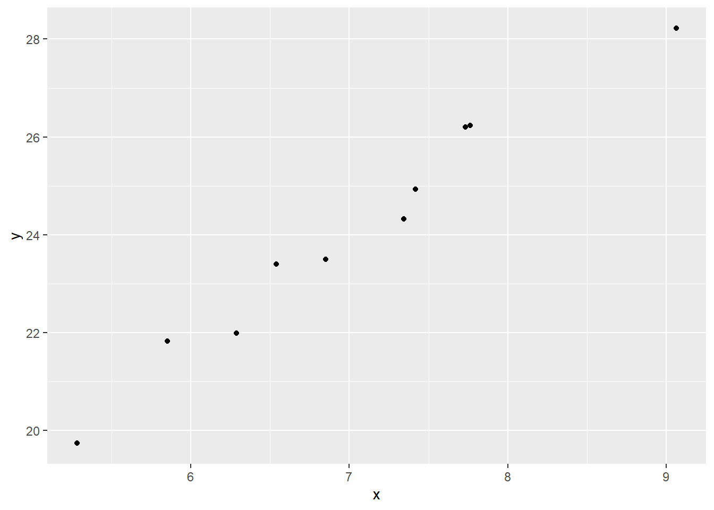
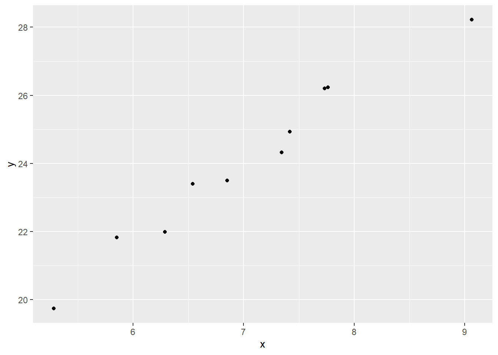

library(tidyverse)
set.seed(100)
x <- runif(10, 5, 10)
y <- 10 + 2 * x + rnorm(10, 0, 1)
ggplot(data = data.frame(x, y),
aes(x, y)) + geom_point()
The univariate regression model has one dependent and one independent variable. The goal is to determine the relationship between the two variables.
Here we will explore the mathematics of this model and replicate results from R “by hand”.
First, let’s simulate some data.
library(tidyverse)
set.seed(100)
x <- runif(10, 5, 10)
y <- 10 + 2 * x + rnorm(10, 0, 1)
ggplot(data = data.frame(x, y),
aes(x, y)) + geom_point()
We will start by standardizing both \(x\) and \(y\), this means calculating each observations distance from the mean in units of standard deviations. For \(x\), standardization will give
\[z_x = \frac{x_i-\bar{x}}{s_x}\]
where \(x_i\) is a single observation, \(\bar{x}\) is the mean and \(s_x\) is the sample standard deviation.
The correlation (\(r_{xy}\)) is sum of products of the standardized variables divided by \(n-1\):
\[r_{xy} = \frac{1}{n-1}\sum^n_{i=1} z_x * z_y\]
Using R we can save the standardized values in separate objects and the calculate the correlation coefficient:
The sum of the standardized products will reach the sample size (or \(n - 1\)) when the there is agreement between the standardized scores from the center (mean) of each variable. \(r=1\) occurs when \(z_x = z_y\) which is equivalent to \(\frac{\sum^n_{i=1} {z^2_x}_i}{n-1}=1\). We have to use \(n - 1\) if we use the sample standard deviation in calculations (where the denominator is also is \(n-1\)).
The slope \(b_1\) in a univariate regression is closely related to the correlation as:
\[b_1=r_{xy} \times \frac{s_y}{s_x}\]
When we have established the slope, we are also able to calculate the intercept \(b_0\):
\[b_0 = \bar{y} - b1 \times \bar{x}\]
We will now be able to calculate the residuals or errors of the model which will tell us something about the variation around the fitted line. A residual is the difference between the observed \(y_i\) and fitted \(\hat{y}_i\) value. As \(\hat{y}_i = b_0 + b_1x_i\) we can calculate the erors in R as:
From the errors we derive the standard error of the model (\(se\)) from the equation:
\[se = \sqrt{\frac{1}{n-2} \sum^n_{i=1}e^2_i}\]
We are dividing by the degrees of freedom for two estimates (intercept and slope; \(n-2\)).
The standard error of the intercept is
\[{se_b}_0 = \frac{se}{\sqrt{n}} \times \sqrt{1+\frac{\bar{x}^2}{\frac{\sum x-\bar{x}^2}{n}}}\]
The standard error of the slope is
\[{se_b}_1 = \frac{se}{\sqrt{n}} \times \frac{1}{s_y}\]
Let’s fit the model in R and compare the numbers:
Call:
lm(formula = y ~ x, data = data.frame(y, x))
Residuals:
Min 1Q Median 3Q Max
-0.45687 -0.40060 -0.09901 0.42615 0.54157
Coefficients:
Estimate Std. Error t value Pr(>|t|)
(Intercept) 8.1907 0.9887 8.284 3.39e-05 ***
x 2.2596 0.1395 16.200 2.12e-07 ***
---
Signif. codes: 0 '***' 0.001 '**' 0.01 '*' 0.05 '.' 0.1 ' ' 1
Residual standard error: 0.4557 on 8 degrees of freedom
Multiple R-squared: 0.9704, Adjusted R-squared: 0.9667
F-statistic: 262.5 on 1 and 8 DF, p-value: 2.119e-07